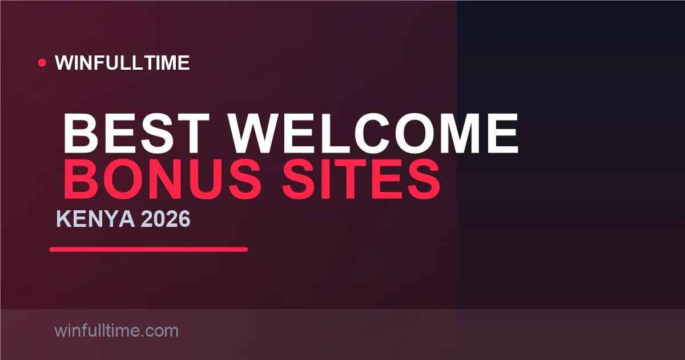

Best Welcome Bonus Betting Sites in Kenya 2026: Ranked & Explained Honestly

Every Kenyan bookmaker shouts "100%", "300%", "up to KES 45,000!" — but almost none of that headline is cash. A welcome bonus is a bet credit wrapped in wagering requirements, and in Kenya those requirements run through the 20% excise on every stake. We ranked the offers by real, achievable value, then told you honestly which ones are traps.

How Welcome Bonuses Actually Pay
A welcome bonus in Kenya comes in two flavours. Deposit-match cash (e.g. "100% up to KES 10,000") doubles your deposit into "bonus funds", and bet credit (e.g. bet365's "up to KES 12,000") is a separate credit balance fed by your qualifying deposits. Both share the same rule: you cannot withdraw it until you "roll it over" through a set amount of betting.
That rollover is the wagering requirement. If your bonus is KES 10,000 at 5x, you must generate KES 50,000 of qualifying stakes before the balance is cash — and because every stake carries the built-in 20% excise duty, roughly a fifth of that wagering never reaches the odds at all. The headline number is a fantasy; the achievable value is fractions of it.
Bonus figures taken from each operator's Kenyan terms, verified August 2026. Offers change frequently — always re-read the current terms before claiming.
1. 1xBet 300% up to KES 45,000
1xBet's 300% first-deposit bonus up to KES 45,000 is the biggest headline in the Kenyan market, and on raw size nobody touches it. A KES 200 deposit (the site's minimum) returns KES 600 in bonus funds; max it out at KES 15,000 and the bonus scales to 45,000. The full ceiling also unlocks a casino package of 190,000 plus 150 free spins for those who want slots instead.
Now the honest part. Wagering is 5x on accumulator bets with three or more selections, each at minimum odds around 1.40. That triple constraint — rollover, acca-only, minimum odds — is what converts most players' bonuses back to the house. The sportsbook itself is superb (deep markets, virtuals, two million-plus monthly visitors), but claim this only if you genuinely wager large accas anyway.
Pros
- Largest headline bonus in Kenya by far
- Casino alternative package available
- Bankroll sustains very large accumulator players
Cons
- 5x acca-only wagering at 1.40 minimum odds
- Most players convert only a fraction
- Curacao licence rather than BCLB
Verdict: Claim it only if you are already a serious accumulator player. For casual singles bettors, the bonus is decorative.
2. bet365 Bet Credit up to KES 12,000
bet365's Kenyan welcome offer issues bet credit up to KES 12,000 based on your qualifying deposit. It ranks above far bigger numbers because of what it does not demand: no accumulator restriction. You can roll the credit over on singles, any market, any sport — the most flexible wagering terms of any serious Kenyan offer.
The trade-offs are entry and support. The minimum deposit of KES 500 is the highest among the top players, and bet365 closes eligibility quickly if an account is flagged for bonus abuse. But for flexibility and your ability to actually convert the credit, it is the strongest engineering of any welcome offer here.
Pros
- Use credit on any market, no acca forced
- Strong, well-run product behind it
- Credit structure is easy to understand
Cons
- KES 500 deposit floor is the highest here
- Strictly enforced terms
- No BCLB licence
Verdict: The smartest real-value claim in Kenya for anyone who deposits KES 500+ and wants terms they can actually convert.
3. PariPesa 100% up to KES 20,000
PariPesa matches your first deposit 100% up to KES 20,000 — twice the ceiling of Betway or SportPesa — with the friendliest wagering picture among the big offers: 5x on accumulator bets, but with softer odds floors than the offshore flagships, plus weekly reloads and cashback once you are in. A KES 200 minimum deposit keeps the entry realistic.
For the player who wants real-money scale without a 300% slog, this is the sweet spot: the reward is twice Betway's but the terms are comparably achievable.
Pros
- 100% up to a generous KES 20,000
- 5x wagering with approachable margins
- Ongoing reloads keep value coming
Cons
- Wagering still acca-weighted
- Newer brand, smaller local footprint
- Curacao licence
Verdict: The best size-to-effort ratio in Kenya — serious bonus value without the 300% grind.
4. Betway Kenya 100% up to KES 10,000
Betway Kenya offers a 100% first-deposit match up to KES 10,000, available by depositing the qualifying amount and entering the code or tapping the promotion. It is not the biggest number, and that is part of the point: Betway's polish, its market-leading M-Pesa payout speed and its BCLB-era licensing make this the most trustworthy way to claim a bonus in Kenya.
Terms sit at 5x wagering on accumulator bets with three or more selections — standard for the market. For a first bonus on a brand you can actually rely on to pay out, this earns its place.
Pros
- Trusted local brand that actually pays out fast
- 5x acca terms are clear and attainable
- Excellent odds depth and native apps
Cons
- KES 10,000 cap is half PariPesa's
- Acca-only wagering
Verdict: The safest bonus claim in Kenya — lower headline, but it converts, and the cash-out speed is unmatched.
5. BetWinner 100% up to KES 15,000
BetWinner's 100% match up to KES 15,000 sits between PariPesa and Betway in size, but its edge is the after-sale. Where rivals vanish after the first deposit, BetWinner layers on weekly cashback on losses, free-bet giveaways and accumulator insurance — benefits a regular bettor feels long after the welcome bonus is spent.
Combined with live streaming and a KES 200 deposit floor, it rewards players who stay. The offshore licence (Curacao) and dense interface are the usual caveats.
Pros
- 100% up to KES 15,000
- Best ongoing programme of the five
- Reliable M-Pesa withdrawals
Cons
- Curacao licence
- Dense interface takes time to learn
Verdict: Pick BetWinner when you plan to stay — the welcome bonus is decent, the ongoing perks are the real prize.
Full Welcome Bonus Comparison Table
| Operator | Welcome Offer | Min Deposit | Wagering | Real-Value Note |
|---|---|---|---|---|
| 1xBet | 300% up to KES 45,000 | KES 200 | 5x acca (3+, ⇡1.40) | Biggest but hardest to convert |
| bet365 | Bet credit up to KES 12,000 | KES 500 | Flexible, no acca lock | Best terms per shilling |
| PariPesa | 100% up to KES 20,000 | KES 200 | 5x acca | Best balance of size + effort |
| BetWinner | 100% up to KES 15,000 | KES 200 | 5x acca | Best ongoing programme |
| 22Bet | 100% up to KES 12,000 | KES 100 | 5x acca | Low entry, mid ceiling |
| Betway Kenya | 100% up to KES 10,000 | KES 200 | 5x acca (3+) | Most trusted claim |
| SportyBet | 100% up to KES 5,000 | KES 100 | Acca-weighted | Best for ultra-low budgets |
| SportPesa | Up to KES 5,000 | KES 100 | 3x acca | Lowest wagering multiplier in the market |
| MozzartBet | 100% up to KES 5,000 | KES 100 | Acca-weighted | Perfect entry-level bonus |
| Betika | 100% up to KES 3,000 | KES 100 | Moderate | Jackpot focus, smaller bonus |
All figures from the operators' Kenyan pages, August 2026. "Real-value" verdicts are editorial judgment from wagering terms, not operator claims.
The Traps in Every Kenyan Bonus
- The acca lock. Most offers wagered only on accumulator bets with 3+ selections at minimum odds ~1.40. Singles players cannot convert the bonus at all.
- The built-in excise. 20% excise duty is deducted from every stake — including bonus-funded ones. A 5x rollover of KES 45,000 quietly loses ~KES 9,000+ to levy before the odds even apply.
- The expiry window. Most bonuses expire 7–30 days after crediting. Slow players forfeit to terms.
- Bonus-abuse flags. Same-result "safe" bets, identical odds on both sides, or obvious bonus-only staking get accounts closed with bonus forfeited.
How to Evaluate Any Offer in 30 Seconds
Skip the percentage. Run this check instead:
- What is the rollover? 3x beats 5x beats 10x, full stop. SportPesa's 3x acca is quietly the cheapest convert in the market.
- Can I bet it the way I normally bet? If the bonus only converts via 3+ leg accas and you play singles or doubles, its value is ~zero for you.
- What is the minimum-odds rule? A 1.40 floor means you must bet favourites, which rarely carry value.
- What is my real stake? Divide the bonus by the rollover, subtract ~20% for excise, and that is the true expected value — usually single-digit percentages of the headline.
The practical takeaway: the best welcome bonus is the one whose terms match your betting style, not the one with the biggest digits. For accumulator players that is 1xBet or Betway; for flexible markets, bet365; for low budgets, SportyBet or MozzartBet.
Bonus-Smart Tips for Kenyan Bettors
Tip 1: Read the T&Cs before you deposit, not after
The longest URL on the offer page is the one that decides what you actually get. Find the wagering requirement, minimum odds and expiry before committing a shilling — if the T&Cs are vague, the bonus is a trap by design.
Tip 2: Match the bonus to your bet style
Acca-heavy player? 1xBet, PariPesa and Betway rewards you. Flexible player? bet365's no-acca-lock credit beats every bigger number. Low-budget player? SportyBet and MozzartBet at KES 100 entry. The wrong bonus for your style converts at near zero.
Tip 3: Never chase the bonus with your own money
A bonus that forces you to bet bigger or more often than your bankroll plan is not free money — it is a loss accelerator. If the wagering demands double your normal stake, walk away and bet the way you planned to.
Tip 4: Factor the excises into the true value
The 20% excise on every stake and the 5% withdrawal excise reduce any bonus's real value by roughly a fifth and then some. When two offers look equal on paper, the cheaper one is whichever has the lower rollover — not the higher percentage.
Frequently Asked Questions
Which betting site has the best welcome bonus in Kenya?
1xBet offers the biggest headline bonus in Kenya — 300% up to KES 45,000 — but wagering is steep: 5x on accumulator bets with three or more selections at minimum odds around 1.40. For the best balance of size and achievable terms, bet365's bet credit up to KES 12,000 and PariPesa's 100% up to KES 20,000 are the smartest plays.
Is a 300% bonus up to KES 45,000 real?
Yes, the offer is real, but it is also the least likely to be fully converted. 5x accumulator wagering with minimum odds on every leg means your 45,000 in bonus must be cycled through qualifying acca bets before you can withdraw. Most players convert a fraction of it. Treat headline percentages as marketing, not value.
Why can't I withdraw my welcome bonus directly?
Bonuses are not cash — they are bet credits controlled by wagering requirements. You must bet the bonus amount a set number of times (the rollover) on qualifying markets before the balance becomes withdrawable. If you withdraw first, the bonus and any winnings on it are forfeited.
What does wagering requirement mean in simple terms?
It is how many times you must bet the bonus before it converts to cash. A KES 1,000 bonus with 5x wagering needs KES 5,000 in qualifying bets. With a 1.40 minimum-odds rule and the 20% excise built into every stake, the true cost of converting that bonus is far higher than the headline number.
Do Kenyan taxes apply to welcome bonuses?
Two levies interact with bonuses. First, the 20% excise duty is deducted from every stake you place — including bonus-funded bets — so part of your wagering never reaches the bookmaker's odds. Second, the 5% excise on withdrawals applies to whatever you eventually cash out, bonus-derived or not.
Bet With Analysis, Not Just Bonuses
The best bonus is worthless without value picks. Get data-driven daily predictions and accumulator builders built for the Kenyan market.
Last updated: 30 August 2026 | By Tochukwu Mesigo |
Build Winning Accumulator Tickets
Generate optimized accumulator combinations from today's data-driven predictions. Set your target odds and get instant ticket suggestions.
Pro Ticket Builder →